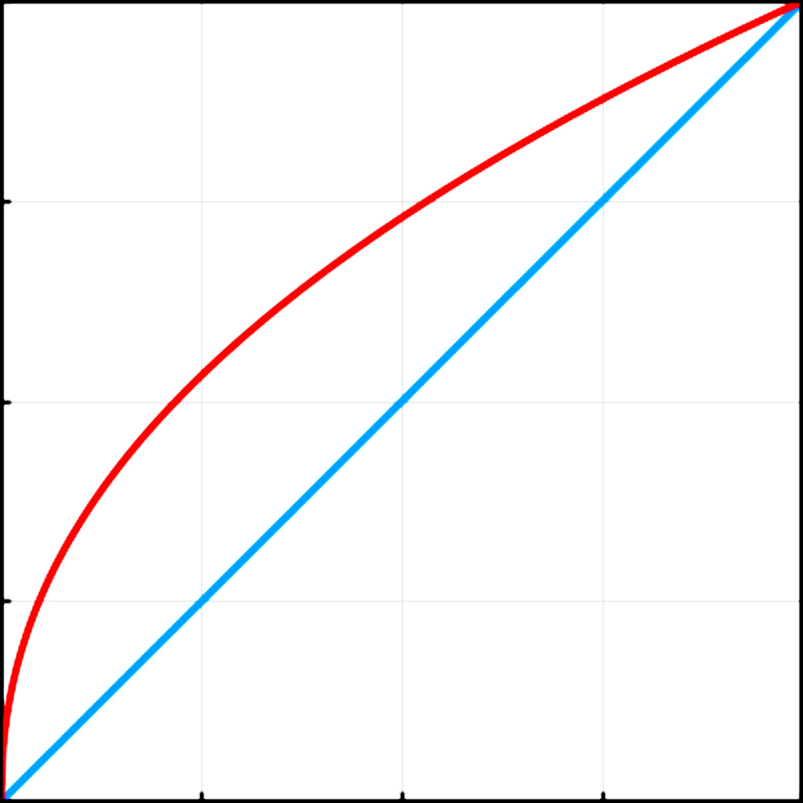

Linear Color Space 渲染时几点注意
2016-11-30
我们知道在 Linear Color Space 下渲染时，Unity 会将纹理设置为 sRGB 模式，随后硬件在采样时会将其转换到线性空间中，这样 Shader 中得到的值就是线性的了，最后输出到 Color Buffer 时再进行 Gamma 矫正（转换到 sRGB 色彩空间）。

蓝色的线为转换后的线性值。
红色线为 sRGB 色彩空间中的值，是非线性的。
他们之间的转换公式是：
\[\begin{align} Linear &= sRGB^{Gamma} \\ sRGB &= Linear^{1 \over Gamma} \end{align}\]
其实不只是纹理，在 Unity 中材质上的属性也是一样，当然这是引擎的设计了，不需要硬件参与。比如 Material 上有一个 Color 属性，如果当前是 Linear Color Space，那么在编辑器 UI 上设置的 Color 值实际是一个 sRGB 颜色，Unity 会将其转换为线性值再传递到 Shader 中。一般来说只有 Color 值需要注意，Float、Vector 等其它值默认是不存在这种情况的，除非手工为其指定为 [Gamma]。 这一点是我没有注意的，导致渲染出来的效果出了问题。
与此相关的有，一个 Unity 提供的与色彩空间相关的值，unity_ColorSpaceDouble。这个值在 Gamma Color Space 时为 2，在 Linear Color Space 时为 4.594（$$$ 2^{2.2} $$$）。对于这个值可以这样来理解。一般在 Gamma Color Space 中将两个 Color 值相乘后，为了避免颜色变得很暗，会在后面乘以 2，像下面这样：
// color0 和 color1 是从两张纹理中采样出来的
fixed4 c = color0 * color1 * 2;
注意，这个时候我们使用的是 Gamma Color Space，所以 color0 和 color1 都是 sRGB 值。这时如果直接切换到 Linear Color Space，会发现渲染出来的颜色变暗了，这是因为当我们切换到 Linear Color Space 时，color0 和 color1 就已经不是 sRGB 值了，而是线性值了，但是最后乘以的那个 2 还是 sRGB，这就造成了错误的结果。两个 Linear 值和一个 sRGB 值相乘，就像单位不统一一样。所以我们就需要将 2 转换到线性空间，根据上面的公式，由于 Gamma 值是 2.2，所以就得到了 4.594。于是乎 Unity 提供了一个方便我们在两个色彩空间切换的值，unity_ColorSpaceDouble，引擎会自动给其赋值，我们直接拿来使用即可。